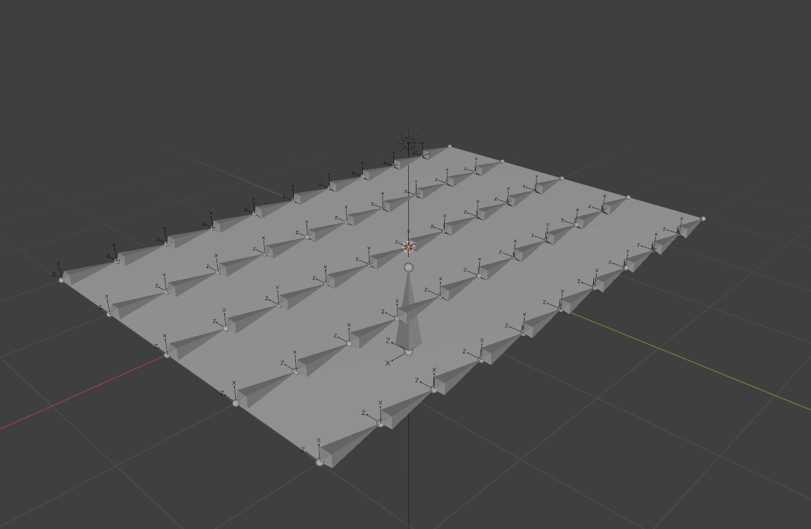

Procedural Animation · 2025
Procedural Flying Carpet
A flying carpet that bends and banks from the path it travels, not from animation clips.
Unreal Engine 5.6 · Control Rig · Niagara
Overview
I wanted to build a flying carpet that didn't rely on traditional animations. Instead of playing animation clips, the carpet would bend and bank based entirely on the way the player flew through the world.
What started as a procedural animation experiment eventually became an exercise in system design. Along the way I learned that the biggest challenge wasn't creating the deformation, it was deciding which system should be responsible for it.
Building the Rig
Before building the procedural system, I first needed a rig that could support it. The carpet was built around a custom bone grid that matched the way it would eventually be reconstructed at runtime.

The First Version
My first implementation lived entirely inside Control Rig. Player pitch and roll values were fed directly into the rig, where every bone was procedurally rotated to create the shape of the carpet.
At first it actually worked really well. The carpet reacted instantly to player input, banked into turns, and was surprisingly expressive without using a single authored animation.
The more I flew around, though, the more I noticed something felt off. The carpet was always reacting to what the player was doing right now, while the movement system had already started following its own path. During larger turns, the front of the carpet could slowly drift away from the direction it was actually traveling.
It wasn't a bug. It was a design problem. I realized I was asking Control Rig to do too much.
Rethinking the Architecture
Instead of sending player input directly into Control Rig, I moved the movement logic outside of it. Player input now controls a simple head proxy that represents the front and center of the carpet. The head proxy's transforms are recorded into a history, and when the carpet is first created that history is prefilled so the full carpet has valid data immediately instead of waiting for the path to build over time.
A recording gate determines when the head proxy has moved far enough to record a new world-space transform. As a new transform is added, the oldest sample is removed, creating a rolling history that always represents the full length of the carpet.
Rather than recording the position of every point on the carpet, I only record a single center path, essentially the spine of the carpet. Each recorded transform becomes one point along that spine. From there, predefined lateral offsets are applied to rebuild the full width of the carpet, creating each row before the final transforms are sent to Control Rig.
Banking
One challenge I ran into was banking. As I turned left or right, the front of the carpet rotated as one rigid line. I wanted to break that up and introduce a more natural flow that felt like cloth. The problem was that using the transform history alone caused every new front row to immediately inherit the orientation of the head proxy. While technically correct, the motion felt stiff because the front of the carpet always reacted instantly.
To create a more natural response, I recorded the player's roll input into a separate history. When generating each new front row, every point across that row samples a roll value. The center uses the newest roll value, while points farther from the center sample progressively older values. This creates a slight delay in the banking across the front of the carpet, making the motion feel like it travels through the fabric instead of rotating all at once.
From there, the transform history handles the rest. As new rows are recorded, older rows naturally move toward the rear of the carpet, carrying that delayed banking with them. I didn't have to animate that propagation separately. Once the banking entered the transform history, it naturally traveled through the carpet as each recorded row moved toward the back.
Building Around It
Once the reconstruction pipeline was working, adding new features became much easier because each system had a clear job.
Camera
The camera follows its own proxy, which tracks the head proxy to create smooth flight without depending on the reconstruction logic.
Niagara Ribbon Trails
Niagara ribbon trails are attached directly to the outer edges of the reconstructed carpet, naturally emphasizing banking and direction changes.
Instead of every system solving movement independently, each one builds on the result of the previous step.
What I Learned
The biggest lesson from this project wasn't learning Control Rig. It was learning how important it is to separate responsibilities.
My first instinct was to solve everything inside the rig because that's where the procedural animation lived. The better solution was to let gameplay generate the movement first, rebuild the carpet from that movement, and let Control Rig focus on placing the skeleton.
That one decision made the project easier to debug, easier to extend, and much easier to reason about.